Introduction
This project is a self-initiated project for getting familiar with data engineering tools and data pipeline. In this project, we will build a simple machine learning pipeline. We would use Jenkins to help us continuously intergrate our models to implement the concept of MLOPS. In addition, we will be using our previous project "Microservice based workflow for MLOPS" to help us store models.
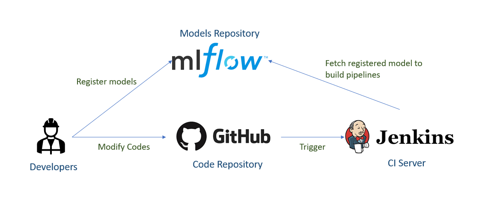Starting MLFlow Services
We execute our docker-compose command to start all the services at once. Then, we could see all the services are green and running.The services we are using is our previous project "Microservice based workflow for MLOPS". We will be using this services to train models and store models. In jenkins, we will be using the models we stored for continuous intergration.(CI)
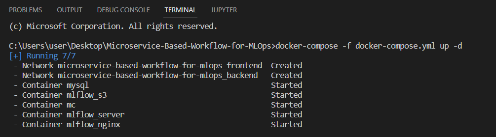We could see the services running now.
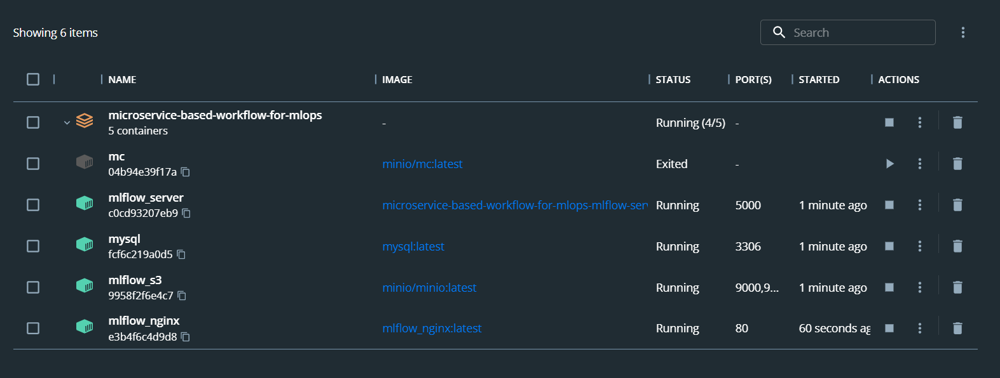Jenkins will use the models registered in ML FLow to build and test.
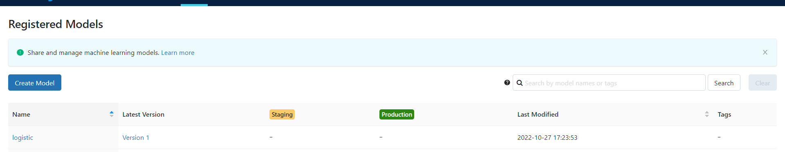Starting Jenkins with Docker
We will be using docker to run our jenkins server. One thing I would like to highlight is that the way I'm going to train models is creating a docker container and train models inside it. Therefore, we will be training models inside a container for ML. Morevoer, this ML container will be inside Jenkins container when we uses Jenkins pipeline for CI. This would lead to some technical problems so called "docker in docker". In order to solve it, we will be following steps on Jenkins's docker documentation. After following the instructions, we could run our services.
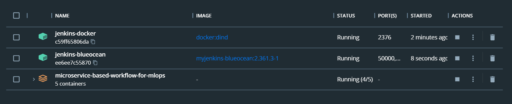
This is what Jenkins server looks like.
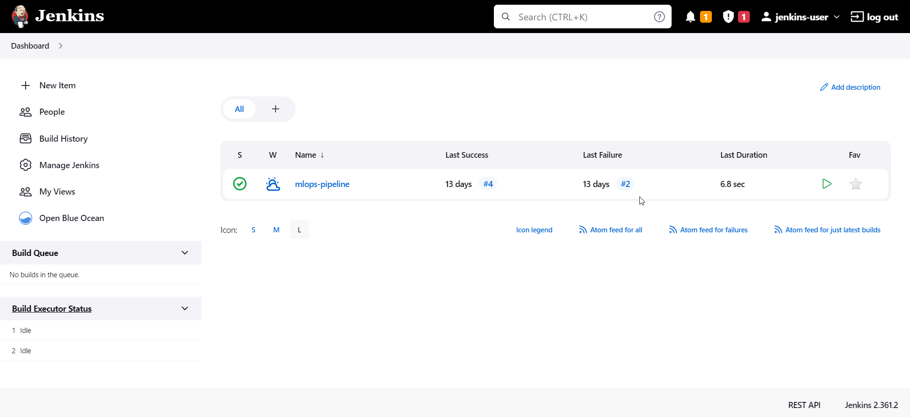
Create a Jenkins Pipeline
We create a new Jenkins pipeline, Below we type our scripts to build the pipeline.

Link Jenkins with Github
Jenkins server will fetch codes on our Github, once we push the code Jenkins will automatically execute the pipeline. We will use webhook to help us do that. However, github webhook won't accept "localhost" or "192.xxx.xxx.xxx" these kind of ip addresses. So we will be using Nrok to provide us a valid Ip address.
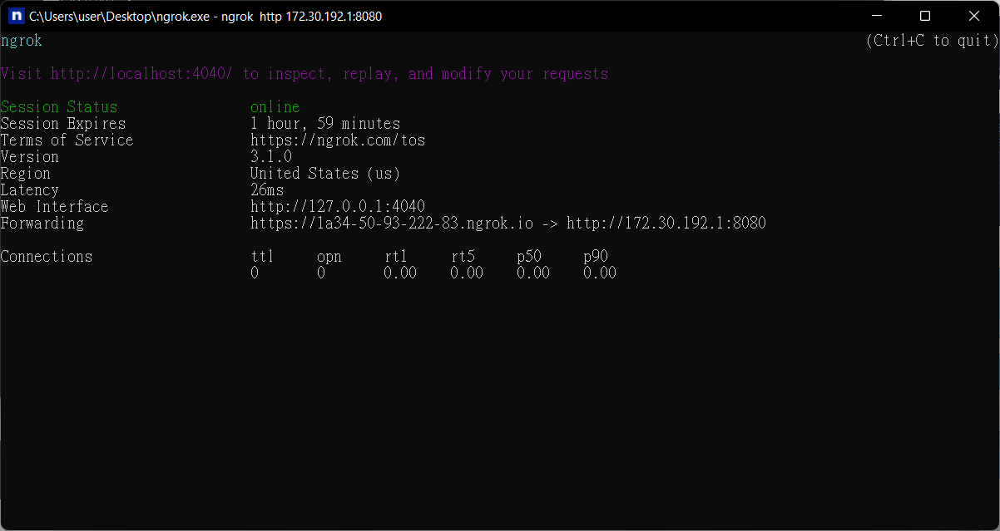
Then we will be using the Ip address from Nrok to configure our webhook.
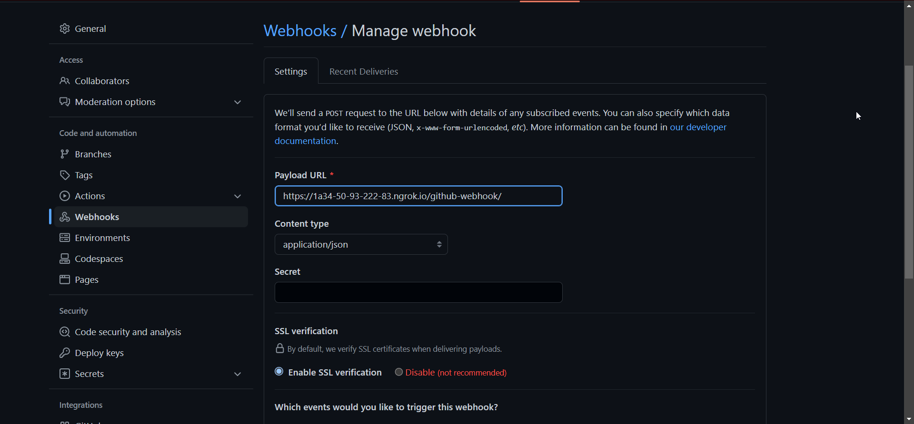Testing the Pipeline
Now, we commit anything to our github to trigger Jenkins. Below is the picture showing that Jenkins has been triggered. You could look at the "build trigger executor".
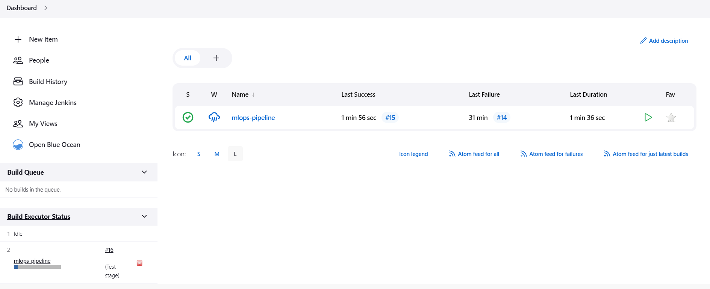
We could also check github to see whether the webhook launch successfully.
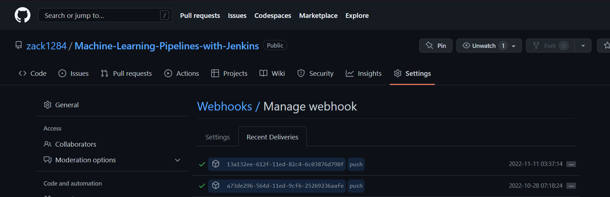
The picture shows that we have built the pipeline successfully.
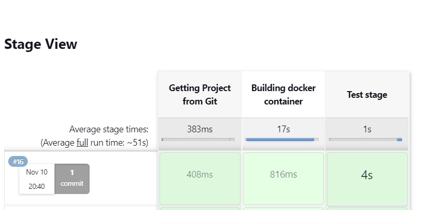The output prints out the metrics of our models.
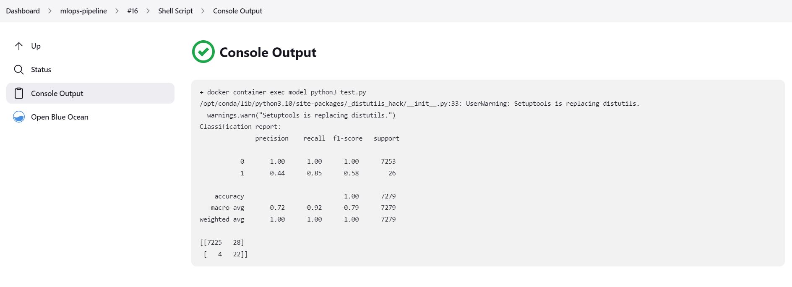